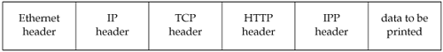
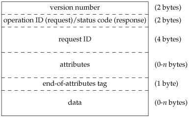

21.2. The Internet Printing ProtocolIPP specifies the communication rules for building network-based printing systems. By embedding an IPP server inside a printer with an Ethernet card, the printer can service requests from many computer systems. These computer systems need not be located on the same physical network, however. IPP is built on top of standard Internet protocols, so any computer that can create a TCP/IP connection to the printer can submit a print job. Specifically, IPP is built on top of HTTP, the Hypertext Transfer Protocol (Section 21.3). HTTP, in turn, is built on top of TCP/IP. The structure of an IPP message is shown in Figure 21.1. Figure 21.1. Structure of an IPP messageIPP is a requestresponse protocol. A client sends a request message to a server, and the server answers with a response message. The IPP header contains a field that indicates the requested operation. Operations are defined to submit print jobs, cancel print jobs, get job attributes, get printer attributes, pause and restart the printer, place a job on hold, and release a held job. Figure 21.2 shows the structure of an IPP message header. The first 2 bytes are the IPP version number. For protocol version 1.1, each byte has a value of 1. For a protocol request, the next 2 bytes contain a value identifying the requested operation. For a protocol response, these 2 bytes contain a status code instead. Figure 21.2. Structure of an IPP header The next 4 bytes contain an integer identifying the request. Optional attributes follow this, terminated by an end-of-attributes tag. Any data that might be associated with the request follows immediately after the end-of-attributes tag. In the header, integers are stored as signed, two's-complement, binary values in big-endian byte order (i.e., network byte order). Attributes are stored in groups. Each group starts with a single byte identifying the group. Within each group, an attribute is generally represented as a 1-byte tag, followed by a 2-byte name length, followed by the name of the attribute, followed by a 2-byte value length, and finally the value itself. The value can be encoded as a string, a binary integer, or a more complex structure, such as a date/timestamp. Figure 21.3 shows how the attributes-charset attribute would be encoded with a value of utf-8. Figure 21.3. Sample IPP attribute encoding
Depending on the operation requested, some attributes are required to be provided in the request message, whereas others are optional. For example, Figure 21.4 shows the attributes defined for a print-job request.
The IPP header contains a mixture of text and binary data. Attribute names are stored as text, but sizes are stored as binary integers. This complicates the process of building and parsing the header, since we need to worry about such things as network byte order and whether our host processor can address an integer on an arbitrary byte boundary. A better alternative would have been to design the header to contain text only. This simplifies processing at the cost of slightly larger protocol messages. IPP is specified in a series of documents (Requests For Comments, or RFCs) available at http://www.pwg.org/ipp. The main documents are listed in Figure 21.5, although many other documents are available to further specify administrative procedures, job attributes, and the like.
|